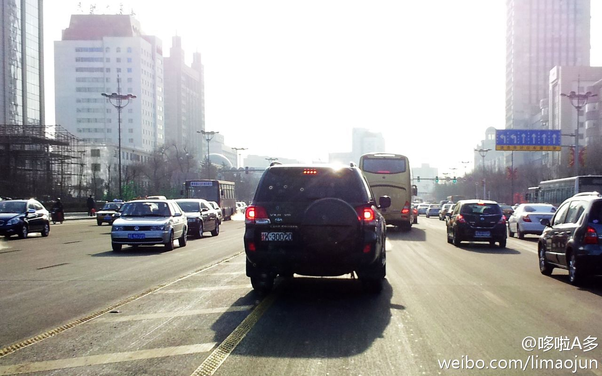

哎我去，少将就可以看这边车多就压黄线通行么？现在终于理解中山路上那么宽的黄色隔离带是干啥用的了。一早晨看到好几个，黑AD、黑**警、WJ07。。哎我去！！！100块啊！！100块！！！@李多多:解放军叔叔，你的真实姓名是不是叫“不违章不舒服斯基”？2012年2月7日9时摄于中山路，一辆车牌为“沈K30020”的丰田越野车压黄线行驶。。。这要是私家车，拍到就是100块啊！ @新浪黑龙江 @斑马很靠谱 @栋梁兄 @哈尔滨的今天 @黑龙江新闻 
解放军叔叔，你的真实姓名是不是叫“不违章不舒服斯基”？2012年2月7日9时摄于中山路，一辆车牌为“沈K30020”的丰田越野车压黄线行驶。。。这要是私家车，拍到就是100块啊！ @新浪黑龙江 @斑马很靠谱 @栋梁兄 @哈尔滨的今天 @黑龙江新闻